The MOBILISCOPE
A free and open-source web mapping platform to explore cities around the clock
The Mobiliscope is licensed under the GNU GPLv3 license (a free, copyleft license). The GNU General Public License v3 is intended to guarantee freedom to share and change all versions of a program to make sure it remains free software for all its users.
To cite the Mobiliscope: Géographie-cités (2017). Mobiliscope (Version 2). Available from http://mobiliscope.parisgeo.cnrs.fr/.
Mobiliscope has been optimized for Firefox, Chrome and Opera. Please check your browser.
MOBILISCOPE
Cities around the clock: the Paris region


+
-

Ⓒ Mobiliscope, Géographie-cités, 2017
Source : Enquête Globale Transport (EGT) - 2010, DRIEA-STIF-OMNIL (producer), ADISP-CMH (distributor) I
IN THE WHOLE METROPOLITAN AREA
Duncan
Moran
Unique
Stacked